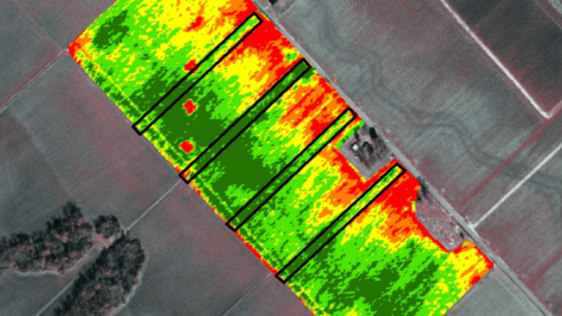

A perda de produtividade causada por fatores climáticos pode comprometer diretamente a capacidade de pagamento do produtor rural.
Com prova técnica e respaldo legal, é possível reestruturar sua dívida.
A perícia em frustração de safra envolve análise técnica detalhada de eventos climáticos, histórico da área, manejo adotado e impacto produtivo.
Com base no MCR 2.6.4, é possível comprovar tecnicamente a incapacidade temporária de pagamento decorrente da frustração de safra.

📚